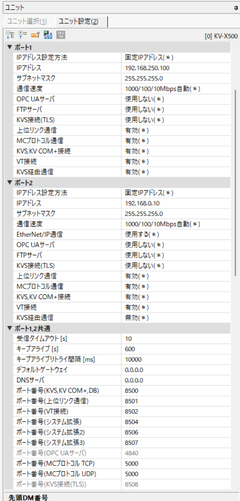

KEYENCE KV-X500 — PLC-side settings
KEYENCE KV-X500 — built-in Ethernet port.
What you need
- Configuration tool: KV Studio
- Network: Align IP address, subnet mask, and default gateway with your network environment.
- After configuration: Power cycle the PLC to apply the new parameters.
Example values used in this guide
| Parameter | Example value | Notes |
|---|---|---|
| IP address | 192.168.250.100 |
Adapt to your network |
| Port | 8501 |
Upper Link default |
PLC-side settings
Screen: Unit settings
| Parameter | Setting |
|---|---|
| IP Address | 192.168.250.100 (example) |
| Subnet Mask | Match your network |
| Default Gateway | Match your network |
| Upper Link Communication | Enabled |
| Port Number (Upper Link) | 8501 |
KV-X500 limitations
- Timer/counter preset writes (WS/WSS commands) are not supported on KV-X500.
- The AT (digital trimmer) device is not available on KV-X500.
Connecting with this library
| Parameter | Value |
|---|---|
| Canonical profile | keyence:kv-x500 |
| Port (TCP) | 8501 |
| Port (UDP) | 8501 |
Pass the canonical profile explicitly. The standard connection helpers do not infer it from the PLC.
Code example:
import asyncio
from hostlink import HostLinkConnectionOptions, open_and_connect, read_typed
async def main() -> None:
options = HostLinkConnectionOptions(
host="192.168.250.100",
plc_profile="keyence:kv-x500",
port=8501,
transport="tcp",
)
async with await open_and_connect(options) as client:
dm0 = await read_typed(client, "DM0", "U")
print(f"DM0={dm0}")
asyncio.run(main())
using PlcComm.KvHostLink;
var options = new KvHostLinkConnectionOptions(
"192.168.250.100", 8501, HostLinkTransportMode.Tcp, "keyence:kv-x500");
await using var client = await KvHostLinkClientFactory.OpenAndConnectAsync(options);
var dm0 = await client.ReadTypedAsync("DM0", "U");
Console.WriteLine($"DM0={dm0}");
The PLC-side settings on this page apply to every language. For Rust and Node-RED, start from each library's Getting started.
Screenshots

KV-X500 unit settings screen for upper link communication.